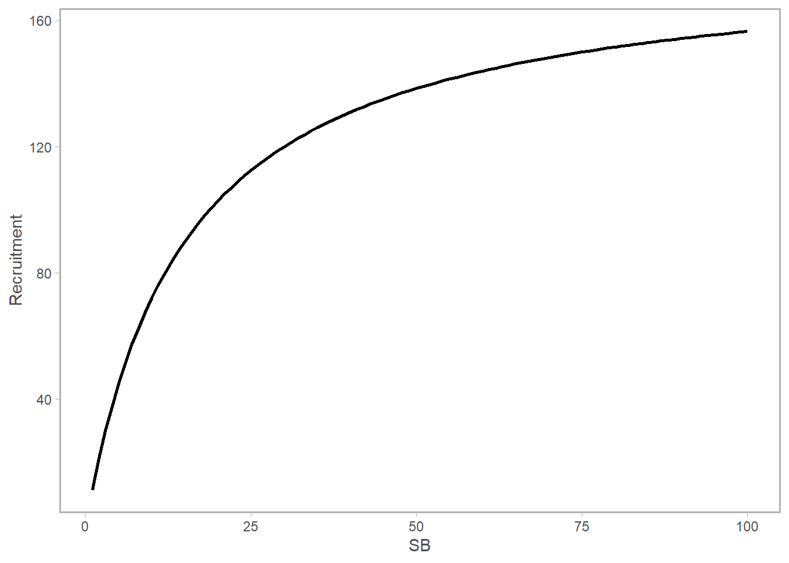
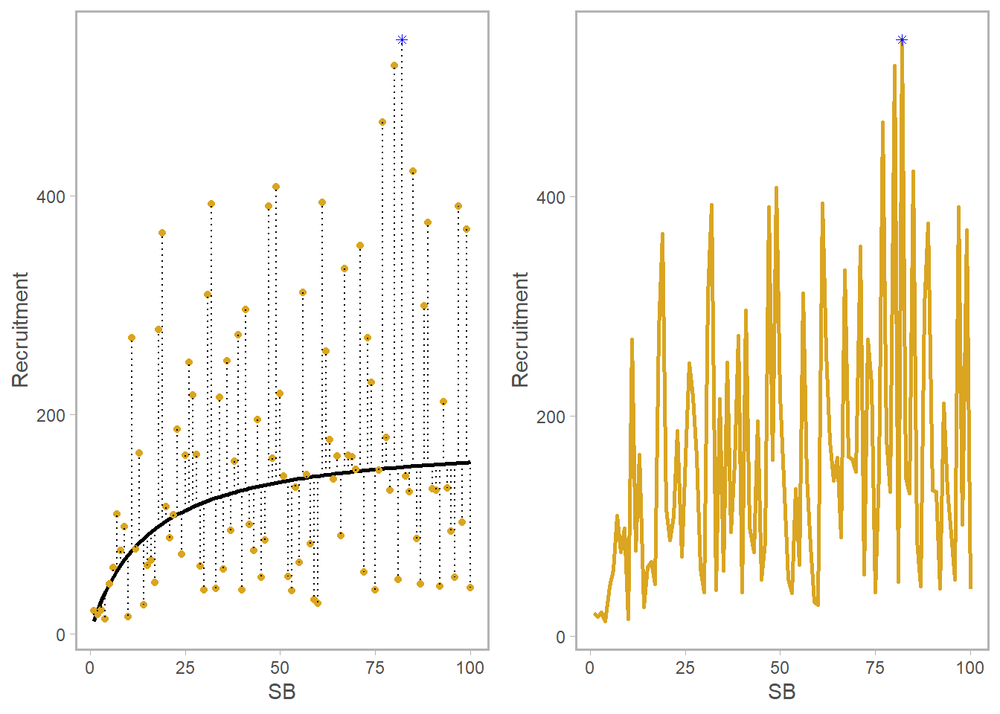
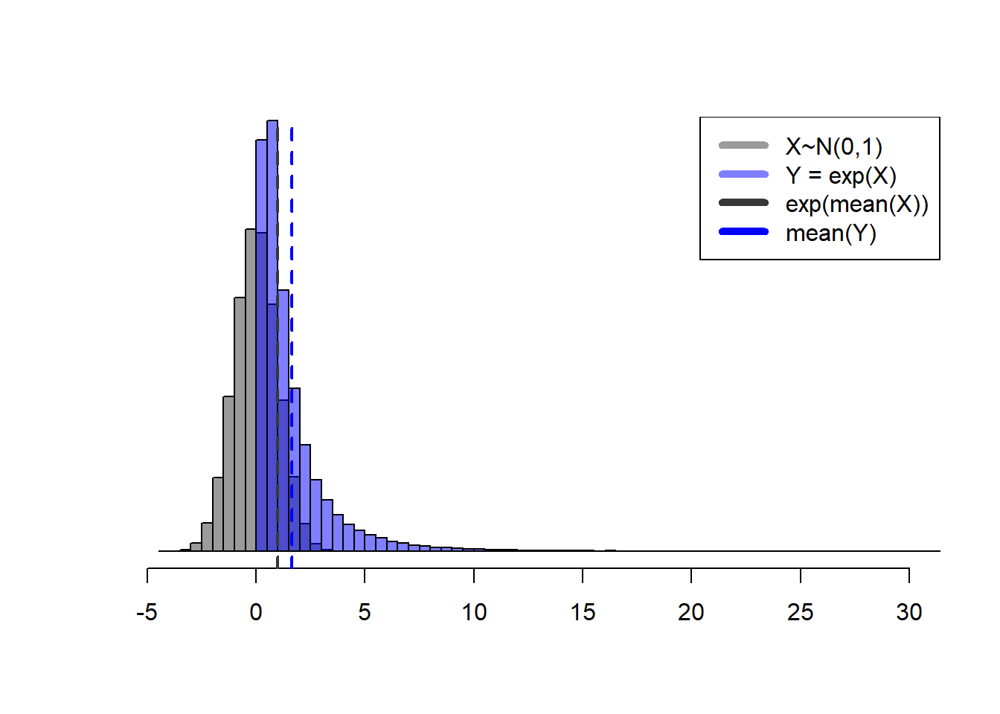

How Do Recruitment Deviations Work?
For an in-depth description of the theory and math behind recruitment deviations in assessment models, check out: Methot, R.D., Taylor, I.G., Chen, Y., 2011. Adjusting for bias due to variability of estimated recruitments in fishery assessment models. Can. J. Fish. Aquat. Sci. 68, 1744–1760. https://doi.org/10.1139/f2011-092.
Here I want to jot down the practical implementation behind the recruitment deviation. The topics covered here are 1) The meaning of a recruitment deviation (abbreviated here to “rec-dev”), 2) the common mathematical syntax for these values, and 3) the practical meaning of lognormal bias correction. This post will not address advanced implementation topics, such as likelihood penalties and bias correction ramps.
What is a rec-dev?
A recruitment deviation is how much a given year’s recruitment deviates from what you’d expect from average. This could be a static value (e.g., unfished recruitment), or the deterministic value given by a stock-recruit relationship (in this post I’ll use the Beverton-Holt [1957] as an example). The idea is that stock productivity is likely not the same every single year, and we need a flexible method to capture that variation in our model fitting procedures. Reasons for these deviations could be environmental, and are generally unexplained – which is why the time series of rec-devs is often interpreted as process error in your system (extra noise in the system not captured by other processes).
Let’s quickly refresh what we’re talking about when we say the mean or expected recruitment level. Again, using the Bev-Holt as an example, this equation describes the expected number of recruits given a stock spawning biomass (SSB). (This syntax is what’s commonly used in Stock Synthesis models: check out my post on recruitment algebra for the derivation).
\[ R_{expected} = \frac{SSB 4hR_0}{SSB_0(1-h)+ SSB(5h-1)} \]
\(h\) is steepness, or the expected proportion of \(R_0\) anticipated at \(0.2SSB_0\); \(R_0\) and \(SSB_0\) are unfished recruitment and unfished spawning biomass, respectively. Given values for these parameters, the “mean” or “expected recruitment” level is what you’d get by plugging in those numbers to the values and reading off the curve:
However, the recruitment in a given year may deviate from the black curve. We can visualize these in two ways. On the bottom left, I’ve invented a series of new recruitment values shown as gold points; the dotted line separating each point from the expected value is the raw value of the deviation itself (in numbers). A time series of these values is shown on the right. The blue point on both plots is the highest year – and you can see that since this is plotted in natural (not log) space it’s fairly hard to distinguish the smaller points from one another.

Let’s think for a second. If we deal in absolutes, the raw (absolute) value of a deviation at high biomass is going to be much larger than the deviation at low biomass. This isn’t very helpful if we’re trying to quantify the degree to which our stock’s recruitment in year \(y\) is diverging from expectation. For that reason, we are interested in modeling the errors, or deviations, as lognormally distributed. Equation-wise, here’s what that looks like. Note that \(R_{det}\) is simply the deterministic value of recruitment, which could come from a Bev-Holt, Ricker, you name it.
\[ R_{expected,y} = R_{det,y}e^{(dev_y-\sigma^2/2)} \]
Now we’ll quickly refresh the idea behind the lognormal distribution and explain what’s up with that \(-\sigma^2/2\).
Refreshing the lognormal distribution.
Check out towardsdatascience.com for a good background read on this topic, which is not specific to recruitment deviations but rather a general property of the lognormal distribution.
If our deviations vector \(\vec r\) is normally distributed with mean zero, \(exp(\vec r)\) is lognormally distributed, shown in blue below:

If \(r_y \sim N(\mu=0,\sigma=1)\) and \(Y = e^{r_y}\), the expected value of \(r_y\) is \(\mu\) (zero), and the expected value of \(Y\) will be \(e^{\mu+\sigma^2/2}\) (1.6487213), not \(e^{\mu}\).
Note that \(e^{r_y}\), the blue values above, are 1) never less than zero and 2) asymmetrically distributed. This means mathematically is that the expected value, or mean, of \(e^{r_y}\) (blue dashed line above) is in fact not the same as \(exp(mean(r_y))\). Confirm this for yourself below.
## the mean of X should be close to 0
mean(X) [1] -0.005742354## that value exponentiated should therefore be close to 1
exp(mean(X))[1] 0.9942741## yet the mean of the blue distribution is larger than 1...
mean(exp(X)) [1] 1.639648##... in fact, the expected value of exp(X) is ~exp(mu+sigma/2)
exp(mu+sigma^2/2)[1] 1.648721This statistical reality makes for a problem if we calculate our annual recruitment by multiplying \(R_{det}\) by \(exp(r_y)\). If we don’t account for it, we end up with inflated annual recruitments because we would be multiplying by values typically greater than 1.
Bias correction to the rescue
The simple idea here is that we are applying a correction to the deviations so that when a year is “average” we’ll be multiplying \(R_{det,y}\) (deterministic recruitment in year y) by \(exp(0) = 1\), and get back the mean or expected value (the black curve in the first figure). Because we’ve discovered that \(exp(r_y)\) is not symmetrical, we need to perform a bias correction to confirm that we approximately return the \(R_{det,y}\) when \(r_y\) is zero.
Check it out:

## as above, the mean is close to 1 without adjustment
exp(mean(X)) [1] 0.9942741## ...though the actual mean is greater, by a factor of sigma^2/2
mean(exp(X)) [1] 1.639648mean(exp(X-1^2/2)) ## with bias correction, closer to 1 again![1] 0.9944967One last thing. Normally we present a time series of rec-devs, and leave them in log space (to get around the scale issue I mentioned above). The horizontal line at zero represents the deterministic or expected recruitment, and the points are the log deviations from that mean. Now you can interpret this plot intuitively, where values below zero were “worse than average years”, and vice versa. What’s more, because we are working in log space you can also get a quantitative sense of how divergent from expectation the recruits were in this year regardless of the stock size at hand. You can also see that the blue point we saw in the earlier figures was not actually as great of an outlier as the original plot suggested

Bonus: why this isn’t perfect
This came up on my General Exam for my PhD. I was asked to walk through the basic logic of the recruitment deviation and why we apply bias correction. Then I was asked, “why is this wrong?”.
Part of the answer lies in the fact that this is a conscious decision made by fisheries population dynamicists to make parts of our models behave in the way we want. Specifically, after applying our bias adjustment factor, the resulting recruitment timeseries will have a median value that is less than the deterministic curve shown above. In the Methot & Taylor paper linked up top, they mention that this is sensible since the average recruitment is most representative of a recruitment event’s long-term contribution to the population, “because most of the population biomass comes from the numerous recruits in the upper tail of the lognormal distribution”. If you’re working with a different data type or hope to gain information from the median behavior of this process, such an adjustment is not for you.